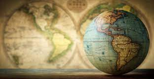
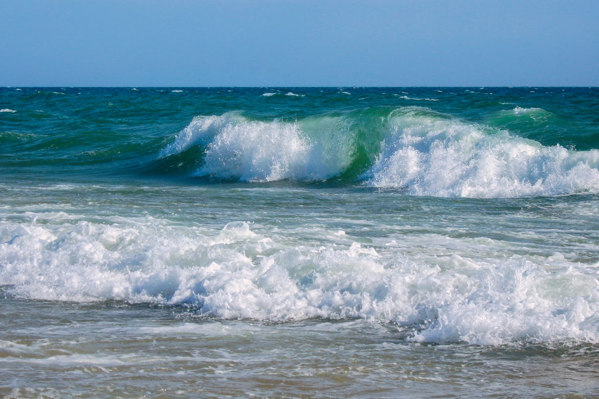
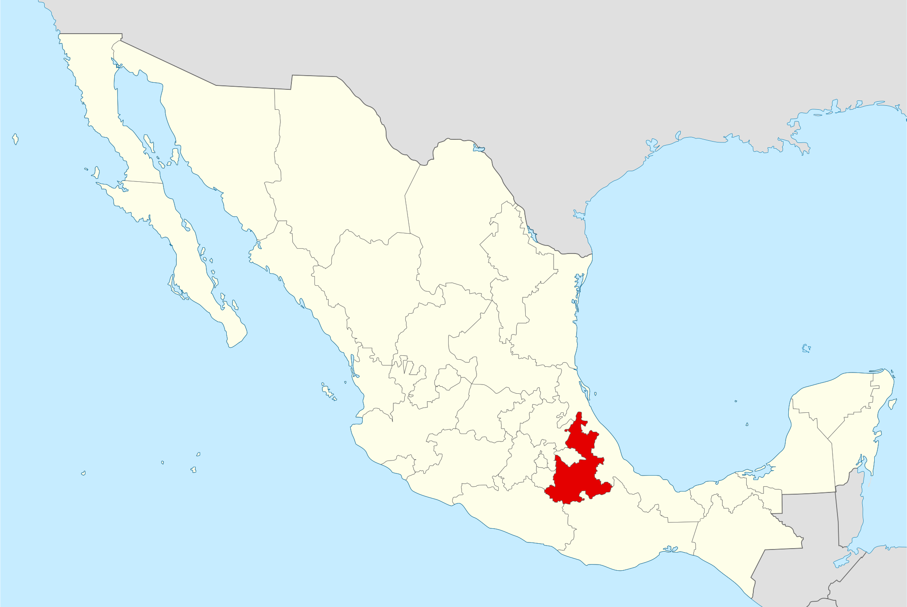
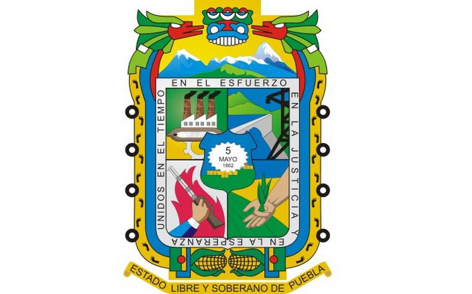
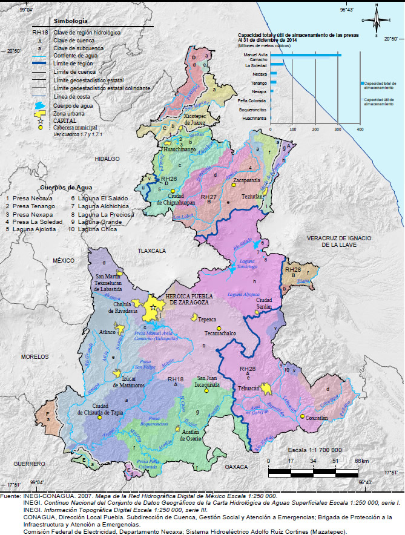
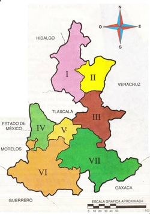
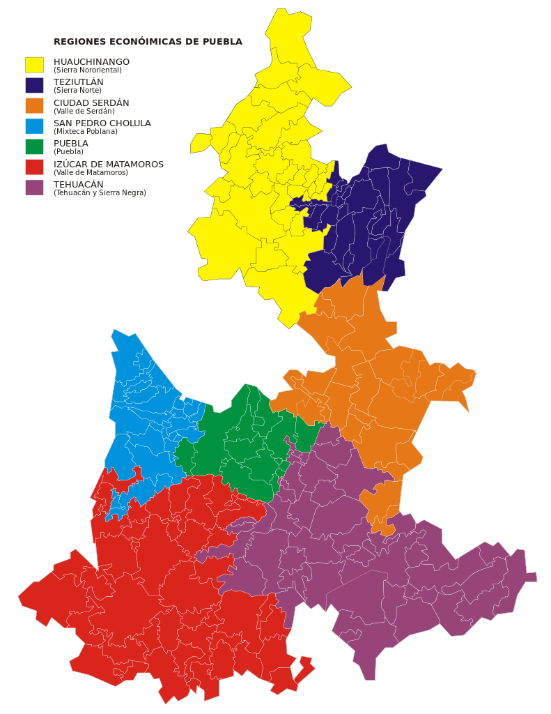
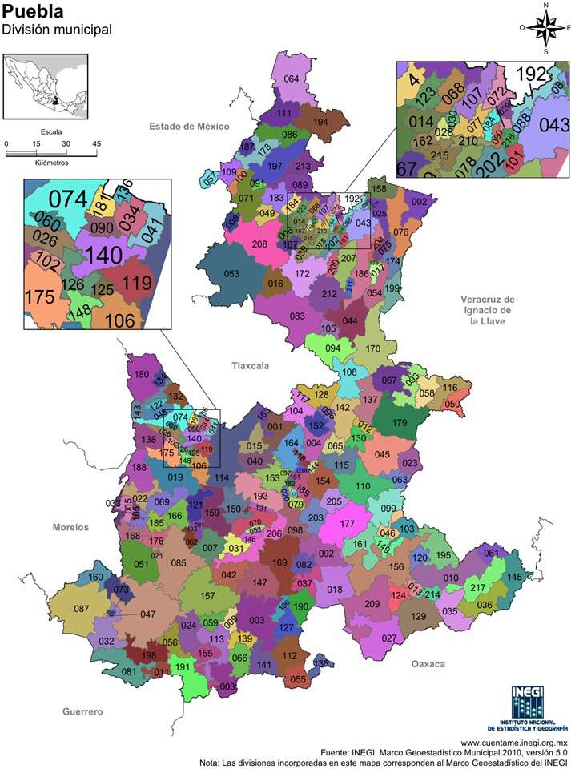

Significado: La geografía tiene por objeto el estudio del medio físico, tanto el espacio natural como la relación entre los seres humanos y su entorno. Esta disciplina se divide, a su vez, en dos grandes ramas: geografía general y geografía regional.
Origen: La geografía apareció en la antigua Grecia, siendo en el comienzo conocida como historia natural o filosofía natural. Las razones de su nacimiento en Grecia son debidas a la rápida expansión de los griegos en Occidente. Gran parte del mundo occidental conocido fue dominado por los griegos, sobre todo el Mediterráneo oriental.
Objeto de estudio: El objeto de estudio de la geografía es la descripción y análisis del planeta Tierra, así como la disposición y la distribución de los elementos que existen en la superficie terrestre.
Ríos: Corrientes continuas de agua, naturales o artificiales, en la superficie terrestre o subterráneas.
Lagos: Cuerpos de agua dulce, generalmente aislados del mar.
Lagunas: Depósitos de agua dulce, más pequeños y menos profundos que los lagos, a veces conectados al mar.
Mares: Extensiones de agua salada, más pequeñas que los océanos, pero que forman parte de estos.
Océanos: Grandes cuerpos de agua salada que cubren la mayor parte de la superficie terrestre.
Aguas Oceánicas: Comprende todos los océanos y mares, caracterizados por ser salados y abarcar la mayoría del agua del planeta.
Aguas Continentales: Incluyen ríos, lagos, estanques y aguas subterráneas, esenciales para los ecosistemas terrestres.
| # | Ríos más importantes | Ríos más caudalosos | Ríos más grandes |
|---|---|---|---|
| 1 | Bravo | Grijalva | Cochos |
| 2 | Balsas | Papaloapan | Bravo |
| 3 | Lerma | Coatzacoalcos | Colorado |
| 4 | Nazas | Balsas | Lerma |
| 5 | Grijalva | Panuco | Papaloapan |
| 6 | Santiago | Santiago | Usumacinta |
| 7 | Tecolutla | Tonala | Balsas |
| 8 | Papaloapan | Nazas | Yaqui |
| 9 | Coatzacoalcos | Aguanaval | Coatzacoalcos |
| 10 | Panuco | Balsas | Hondo |
La hidrología en México se caracteriza por una diversa distribución de aguas, abarcando 37 regiones hidrológicas. Las más notables incluyen cuencas como la del Río Bravo y zonas lluviosas como Chiapas. Destacan también los lagos de Chiapas y el lago Pátzcuaro.
Significado: El nombre "Puebla de los Ángeles" alude a su patrimonio histórico, simbolizando la unión de la cultura y la espiritualidad.
Ubicación Geográfica: Puebla se ubica en el corazón de México, con una geografía diversa que incluye importantes elevaciones y valles.
 Relieve: Comparte el pico más alto del país, el Citlaltépetl, con Veracruz y posee una variedad de paisajes, desde sierras hasta llanuras costeras.
Hidrología: La riqueza hídrica de Puebla se divide en cuatro regiones hidrológicas principales, sustentando una amplia gama de ecosistemas y actividades humanas.
Clima: El clima en Puebla es variado; el templado subhúmedo domina, seguido por el cálido subhúmedo y zonas de clima seco, semiseco y húmedo, reflejando la diversidad altitudinal del estado.
Vegetación y Flora: Con bosques, selvas y praderas de alta montaña, la vegetación es tan variada como su clima, y la agricultura desempeña un papel significativo en el uso de la tierra.
Fauna: La fauna de Puebla es rica y variada, incluyendo especies adaptadas a cada uno de los distintos ecosistemas del estado, desde bosques y selvas hasta matorrales y zonas montañosas.
Regiones Económicas y Socioeconómicas: Puebla se caracteriza por una economía diversificada con regiones como Coronango y Cuautlancingo destacando en el desarrollo económico y urbano.
 Número de Municipios: Puebla se organiza en 217 municipios, cada uno con su propia identidad y contribución a la riqueza cultural y natural del estado.
Los componentes bióticos son los seres vivos que forman parte de un ecosistema. Se clasifican en diversas categorías, como:
Algunos ejemplos comunes son mamíferos, árboles, hongos, bacterias y parásitos, cada uno desempeñando roles vitales dentro de sus ecosistemas.
Los elementos abióticos son los componentes no vivos que influyen en los seres vivos y su entorno, como:
Biotipo: Se refiere a la forma típica de una especie que representa sus características predominantes.
Biocenosis: Es la interacción y coexistencia de diversas poblaciones biológicas en un espacio y tiempo determinados.